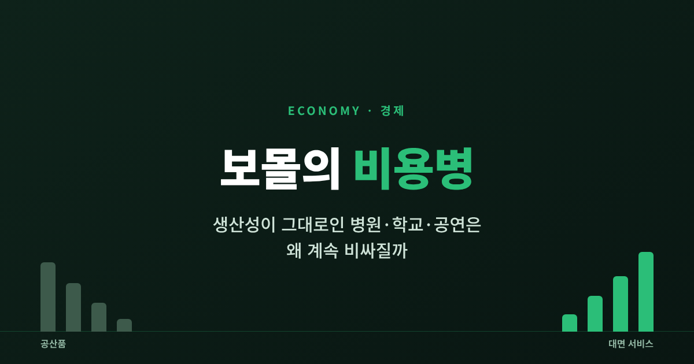
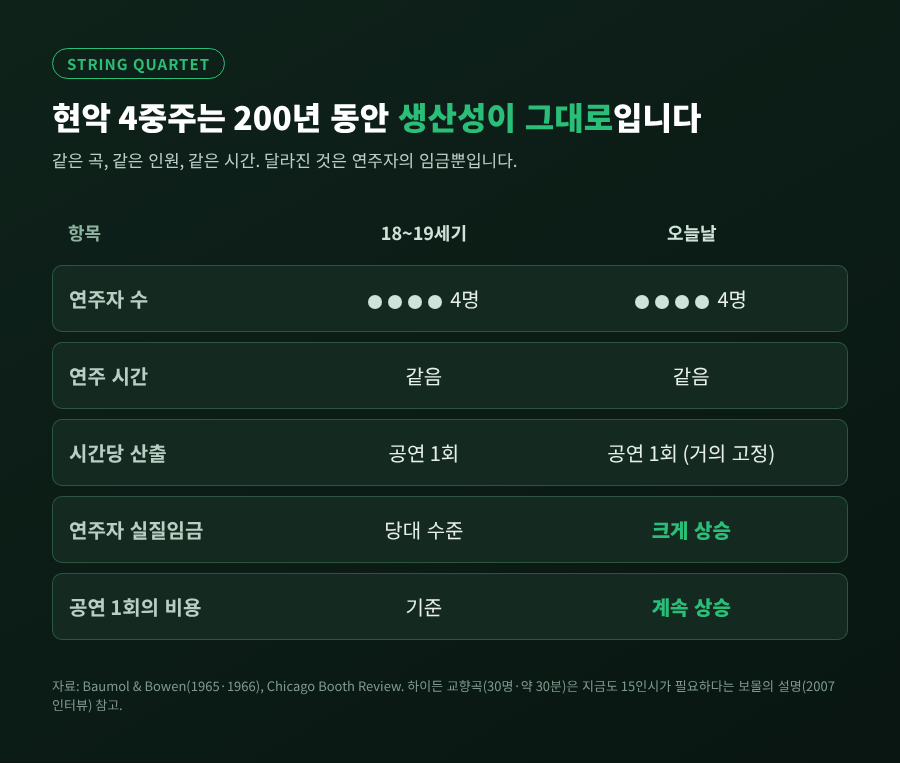
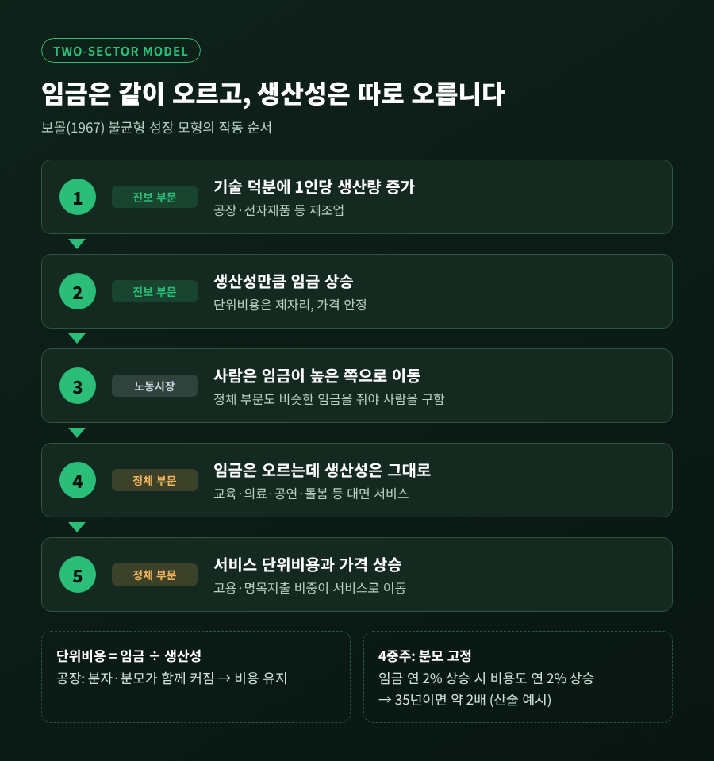
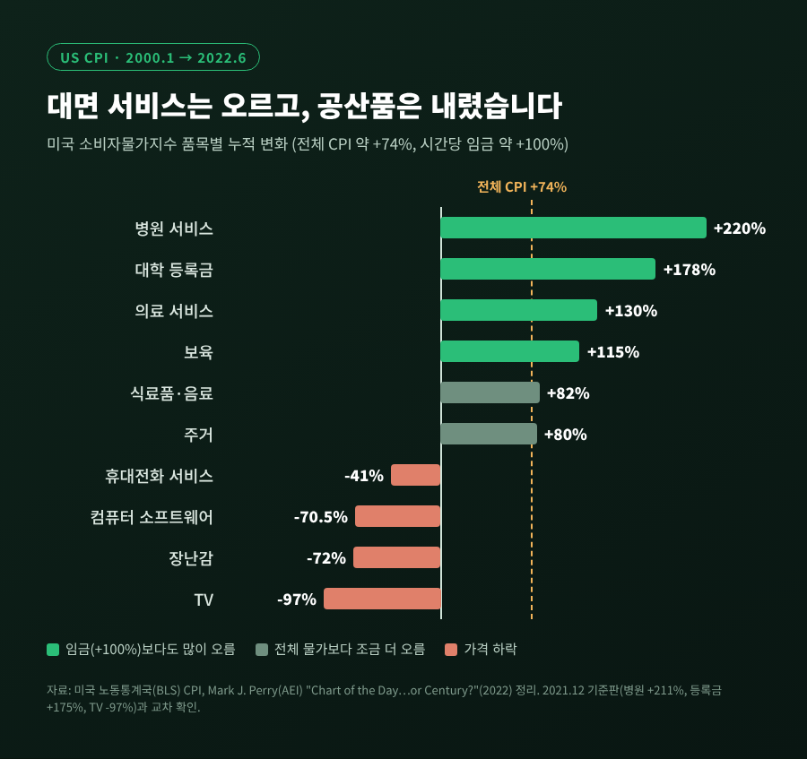
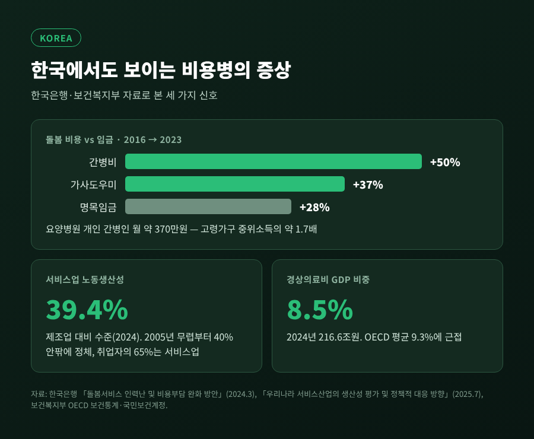
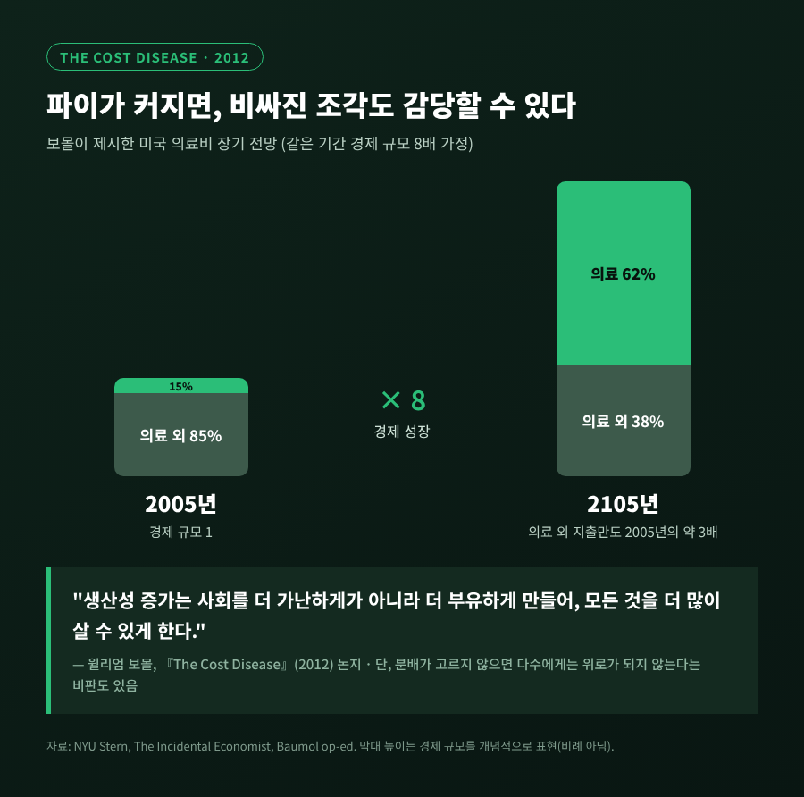
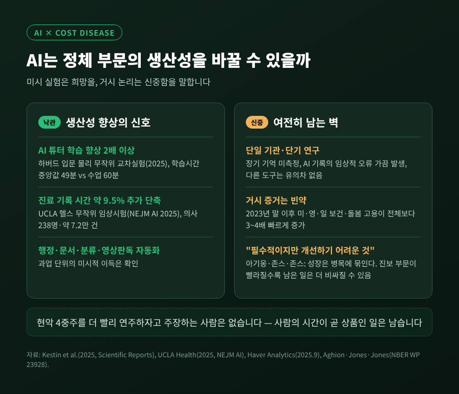

보몰의 비용병 — 생산성이 그대로인 병원·학교·공연은 왜 계속 비싸질까

오늘은 '보몰의 비용병'을 정리해 보려 합니다. TV는 해마다 싸지는데 등록금과 병원비, 공연 티켓은 왜 계속 오르는지에 대한 경제학의 가장 오래된 답입니다.
먼저 결론부터 말씀드리겠습니다.
- 사람의 손과 시간이 곧 상품인 서비스는 생산성이 잘 오르지 않습니다.
- 그래도 그 일을 하는 사람의 임금은 경제 전체의 생산성을 따라 오릅니다.
- 그래서 서비스의 상대가격은 오를 수밖에 없고, 이것은 실패가 아니라 다른 곳의 성공이 남긴 그림자입니다.
■ 1966년, 현악 4중주에서 시작된 질문
출발점은 의외로 공연장이었습니다.
경제학자 윌리엄 보몰과 윌리엄 보웬은 1965년 논문과 1966년 책 『공연예술: 경제적 딜레마(Performing Arts: The Economic Dilemma)』에서 연극·오페라·음악·무용 단체가 왜 늘 적자에 시달리는지 따졌습니다.
이들이 든 예가 현악 4중주입니다. 베토벤의 4중주는 19세기에도, 지금도 연주자 네 명이 같은 시간을 들여야 완성됩니다. 원문 표현을 빌리면 "콘서트홀에서 슈베르트 4중주를 연주하는 바이올리니스트의 시간당 산출은 거의 고정돼 있다"는 것입니다.
보몰은 훗날 인터뷰에서 이렇게 덧붙였습니다. 연주자 30명이 약 30분 연주하는 하이든 교향곡에는 18세기 말과 똑같이 15인시(人時)의 노동이 듭니다. 반면 자동차 한 대를 만드는 데 드는 노동은 해마다 평균 3% 넘게 줄어듭니다.
그런데 연주자의 실질임금은 그사이 크게 올랐습니다. 4중주단이 실력 있는 첼리스트를 붙잡으려면 다른 직업만큼은 줘야 하기 때문입니다.

'보몰의 병'이라는 이름은 정작 보몰이 아니라 1968년 다른 경제학자가 붙였습니다. 보몰 자신은 "증상의 이름을 딴 것"이라고 담담히 말했습니다.
■ 진보 부문과 정체 부문, 임금은 왜 같이 오를까
보몰은 1967년 논문 「불균형 성장의 거시경제학」에서 이 관찰을 경제 전체의 모형으로 넓혔습니다.
경제를 둘로 나눕니다. 생산성이 빠르게 오르는 '진보 부문'(대체로 제조업)과, 거의 오르지 않는 '정체 부문'(대체로 대면 서비스)입니다.
메커니즘은 네 단계로 정리됩니다.
- 진보 부문에서 기계와 기술 덕분에 노동자 한 명이 만드는 양이 늘어납니다.
- 그만큼 그 부문의 임금이 오릅니다.
- 노동자는 임금이 높은 쪽으로 움직일 수 있으므로, 정체 부문도 비슷한 임금을 줘야 사람을 구합니다.
- 정체 부문은 임금 상승을 상쇄할 생산성 향상이 없으니, 단위비용과 가격이 오릅니다.
핵심은 단위비용이 '임금 ÷ 생산성'이라는 단순한 식에 있습니다. 공장은 분자와 분모가 함께 커져 비용이 제자리입니다. 4중주는 분모가 고정돼 있어 분자만큼 비용이 커집니다.
산술 예시를 하나 들어 보겠습니다. 임금이 연 2%씩 오르고 공장 생산성도 연 2%씩 오른다면 공산품 단위비용은 그대로입니다. 같은 조건에서 4중주 한 번의 비용은 연 2%씩 불어나, 35년이면 약 두 배가 됩니다.

모형이 내놓는 결과는 세 가지입니다. 서비스의 상대가격이 계속 오르고, 고용과 명목지출이 서비스 쪽으로 옮겨 가며, 경제 전체의 생산성 증가율은 서서히 둔화합니다.
예일대 윌리엄 노드하우스는 1948~2001년 미국 산업 자료로 이를 검증했습니다. 기술이 정체된 산업일수록 상대가격이 뚜렷이 올랐고, 그 산업들의 비중이 커지면서 20세기 후반 전체 생산성 증가율이 낮아졌다는 결론이었습니다.
■ 숫자로 본 서비스와 공산품의 갈림길
미국 노동통계국(BLS)의 소비자물가지수는 이 갈림길을 선명하게 보여줍니다. 경제학자 마크 페리(AEI)가 BLS 자료로 정리한, 이른바 '세기의 차트'입니다.
2000년 1월부터 2022년 6월까지 전체 물가는 약 74% 올랐습니다. 같은 기간 품목별 변화는 이렇습니다.
| 품목 | 가격 변화 |
|---|---|
| 병원 서비스 | +220% |
| 대학 등록금 | +178% |
| 의료 서비스 | +130% |
| 보육 | +115% |
| 휴대전화 서비스 | -41% |
| 컴퓨터 소프트웨어 | -70.5% |
| 장난감 | -72% |
| TV | -97% |

한 해 앞선 2021년 12월 기준판도 병원 서비스 +211%, 등록금 +175%, TV -97%로 같은 그림이었습니다. 세계경제포럼이 소개한 같은 차트 역시 등록금 +178%로 일치합니다.
BLS 공식 자료도 결이 같습니다. 2006년 1월부터 2016년 7월까지 대학 등록금은 63% 올랐지만 전체 소비자물가는 21% 오르는 데 그쳤습니다.
다만 이 표를 비용병 하나로 다 설명할 수는 없습니다. 같은 기간 평균 시간당 임금은 약 100% 올랐습니다. 임금 대비로 보면 공산품은 훨씬 싸졌고, 병원·등록금·보육 같은 대면 서비스는 임금보다도 빨리 올랐습니다. 보몰 모형이 예측하는 바로 그 모양입니다.
■ 한국에서도 보이는 증상
한국 자료에서도 같은 흔적이 보입니다.
가장 체감이 큰 곳은 돌봄입니다. 한국은행은 2024년 3월 보고서에서 2016년부터 2023년까지 간병비가 50%, 가사도우미 비용이 37% 올랐다고 분석했습니다. 같은 기간 명목임금 상승률은 28%였습니다.
요양병원 개인 간병인을 쓰면 한 달 약 370만원이 듭니다. 65세 이상 고령가구 중위소득의 약 1.7배, 40~50대 자녀 가구 중위소득의 60%를 넘는 금액입니다.
생산성 쪽 숫자도 맞물립니다. 한국은행의 2025년 7월 보고서에 따르면 서비스업 노동생산성은 2005년 무렵부터 제조업의 40% 안팎에 머물렀고, 2024년에는 39.4%였습니다. 그런데 취업자의 65%가 서비스업에서 일합니다.
의료비도 서서히 몸집을 키우고 있습니다. 경상의료비는 2024년 216.6조원, GDP의 8.5%로 OECD 평균(9.3%)에 다가서고 있습니다.

물론 한국의 돌봄 비용에는 고령화로 인한 수요 급증과 인력난도 함께 작용합니다. 비용병은 여러 원인 가운데 바탕에 깔린 하나로 보는 편이 정확합니다.
■ 보몰이 '병'이 아니라고 말한 이유
보몰은 2012년 『비용병: 왜 컴퓨터는 싸지는데 의료는 그렇지 않은가(The Cost Disease)』에서 스스로 이 이름에 반론을 폈습니다.
그의 전망은 이렇습니다. 미국 의료비가 최근 추세대로 오르면 소득 대비 비중이 2005년 15%에서 2105년 62%까지 커집니다. 숫자만 보면 재앙처럼 들립니다.
하지만 같은 기간 경제 규모가 8배가 된다면 이야기가 달라집니다. 의료비를 뺀 나머지 38%만으로도 2005년에 의료 외에 쓰던 돈의 약 3배를 쓸 수 있습니다.

보몰의 문장은 짧습니다. "생산성 증가는 사회를 더 가난하게가 아니라 더 부유하게 만들어, 모든 것을 더 많이 살 수 있게 한다."
그가 진짜 위험으로 꼽은 것은 비용 상승 자체가 아니었습니다. "감당할 수 없다"는 착각 때문에 학교와 치안 같은 필수 서비스를 무리하게 줄이는 선택이었습니다. 실제로 대학 진학률과 기대수명은 비용 상승 속에서도 늘었습니다.
아쉬운 대목도 분명합니다. 보몰 자신도 비용병이 빈곤층에 더 무겁게 작용한다고 인정했습니다. 성장의 과실이 상위층에 쏠리면 '평균적으로 감당 가능하다'는 말은 다수에게 위로가 되지 않습니다. 그래서 이 문제는 결국 감당 가능성보다 분배의 문제라는 비판이 따라붙습니다.
■ 정부 지출이 늘어나는 숨은 이유
비용병은 정부 예산과도 맞닿아 있습니다. 정부가 하는 일의 상당수가 교육, 치안, 의료처럼 사람의 시간이 곧 서비스인 영역이기 때문입니다.
2019년 미국 연구(Semat 외)는 전후 미국 정부 지출의 명목 증가 가운데 상당 부분이 정부가 일을 더 해서가 아니라 공공서비스가 상대적으로 비싸졌기 때문이라고 주장했습니다. 같은 서비스를 유지하는 데에도 더 많은 돈이 든다는 뜻입니다.
반대 증거도 있습니다. OECD 17개국의 1960~2007년 자료를 분석한 2013년 연구는 비용병 가설을 뒷받침하는 결과를 찾지 못했습니다. 저자들도 검정이 약하다고 인정했지만, 정부 규모를 비용병 하나로 설명하기는 어렵다는 점은 기억할 만합니다.
GDP 비중의 변화는 더 분명합니다. 미국 국민의료비는 1970년 GDP의 7%에서 2023년 17.6%(4.9조 달러)로 커졌습니다. OECD 국가에서는 피고용자의 약 70%가 서비스업에서 일하며, 교육·보건·정부가 약 4분의 1을 고용합니다.
예전엔 농업이 그 반대편 사례였습니다. 미국 농업 고용 비중은 1930년 21.5%에서 2000년 1.9%로 줄었습니다. 생산성이 폭발한 부문은 고용도 지출 비중도 줄고, 정체된 부문이 그 자리를 채운다는 것이 보몰 모형의 그림입니다.
■ AI는 정체 부문을 구할 수 있을까
이제 가장 뜨거운 질문이 남습니다. AI가 의사와 교사의 생산성을 끌어올려 비용병을 고칠 수 있을까요.
희망적인 미시 증거는 있습니다. 하버드 입문 물리 수업의 무작위 교차 실험(2025, Scientific Reports)에서 AI 튜터로 배운 학생들의 학습 향상 중앙값은 교실 능동학습의 두 배를 넘었습니다. 학습 시간 중앙값도 49분으로, 수업 60분보다 짧았습니다.
UCLA 헬스의 무작위 임상시험(2025, NEJM AI)에서는 의사 238명이 약 7만2천 건의 진료에 AI 기록 도구를 썼습니다. 한 도구는 진료 기록 작성 시간을 대조군보다 약 9.5% 더 줄였고, 다른 도구는 유의한 차이가 없었습니다.

하지만 신중론도 만만치 않습니다. 두 연구 모두 단일 기관의 짧은 실험이었고, AI 기록에서는 임상적으로 중요한 오류가 가끔 나왔습니다. 교육 실험도 장기 기억은 측정하지 못했고, 수업을 준비하는 데 몇 달의 개발이 들었습니다.
거시 쪽 논리는 더 묘합니다. 경제학자 아기옹·존스·존스는 성장이 우리가 잘하는 것보다 "필수적이지만 개선하기 어려운 것"에 묶일 수 있다고 봤습니다. AI가 이미 빠른 부문을 더 빠르게 만들수록, 임금 균등화를 통해 남은 사람의 일은 상대적으로 더 비싸질 수 있습니다.
최근 미국·영국·일본에서는 2023년 말 이후 보건·돌봄 고용이 전체 고용보다 3~4배 빠르게 늘었다는 분석도 나왔습니다. AI의 이득이 문서 작업 같은 일부 과업에 머문다면, 돌봄의 손길 자체는 여전히 사람의 몫으로 남습니다.
그리고 현악 4중주를 더 빨리 연주하자고 주장하는 사람은 아무도 없습니다.
정리하면 이렇습니다.
보몰의 비용병은 서비스업이 게을러서 생긴 병이 아닙니다. 다른 곳의 생산성이 놀랍게 오른 결과, 사람의 시간이 점점 귀해지는 현상입니다.
"비싸진 것은 서비스가 아니라 사람의 시간이다."
AI가 그 시간을 얼마나 대신할 수 있을지는 아직 열려 있습니다. 다만 교사와 간병인, 연주자의 시간이 더 비싸지는 세상이 그만큼 우리가 부유해졌다는 뜻이라면, 그 값을 기꺼이 치를 방법을 함께 고민해 볼 만하다고 생각합니다.
참고 자료
- Baumol & Bowen, Performing Arts: The Economic Dilemma(1966) / Eastman School 보몰 인터뷰
- Intereconomics(2023), Revisiting Baumol's Disease
- Nordhaus, Baumol's Diseases: A Macroeconomic Perspective(NBER)
- AEI, Chart of the Day…or Century?(2022) / BLS TED(2016)
- NYU Stern, The Cost Disease 소개 / The Incidental Economist
- 뉴시스, 한국은행 돌봄서비스 보고서(2024.3) / 한국경제, 한국은행 서비스업 생산성 보고서(2025.7) / 지표누리 경상의료비
- Semat 외(2019), Business and Politics / Facchini 외(2013), York DP
- Aghion·Jones·Jones, AI and Economic Growth(NBER) / Kestin 외(2025), Scientific Reports / UCLA Health, AI 스크라이브 임상시험
#보몰의비용병 #보몰효과 #서비스물가 #의료비 #대학등록금 #생산성 #경제학개념 #AI와생산성